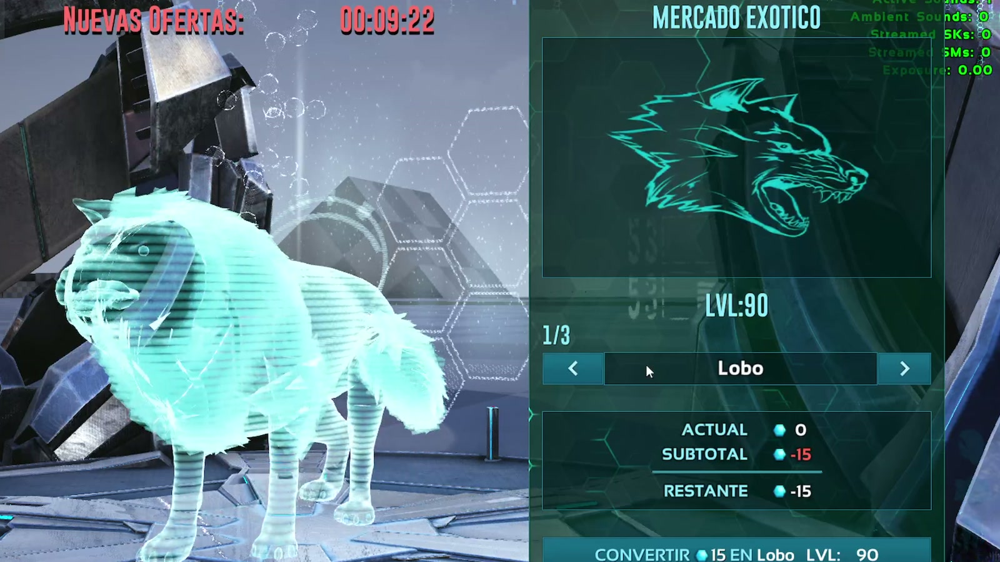

A set of advanced gameplay systems built in ARK's UE4 dev kit: a replicated space-trade economy with a boardable ship, real-time snowfall and physics-driven meteor showers. Un conjunto de sistemas de gameplay avanzados hechos en el dev kit de ARK (UE4): una economía de comercio espacial replicada con una nave abordable, nevadas en tiempo real y lluvias de meteoritos con física.
These are some of my most recent and technically ambitious systems: prototypes that push ARK's dev kit beyond what the base game offers, all designed and programmed by me.
Son algunos de mis sistemas más recientes y ambiciosos técnicamente: prototipos que llevan el dev kit de ARK más allá de lo que ofrece el juego base, todos diseñados y programados por mí.
The centerpiece is a space-trade system: a ship that arrives on the map, which players can board to buy items and creatures from self-restocking markets with their own currency. Alongside it, two world systems: real-time snow accumulation and meteor showers that deal real damage.
La pieza central es un sistema de comercio espacial: una nave que llega al mapa y que los jugadores pueden abordar para comprar ítems y criaturas en mercados que se renuevan solos y tienen moneda propia. A su lado, dos sistemas del mundo: acumulación de nieve en tiempo real y lluvias de meteoritos que hacen daño real.
The whole trade system combined: a ship arrives at a sector of the map and players can board it to trade inside. It has its own UI showing where each shop is, a departure timer, automatic teleport and a level designed specifically for it.
Todo el sistema de comercio junto: una nave llega a un sector del mapa y los jugadores pueden abordarla para comerciar adentro. Tiene su propia interfaz que indica dónde está cada tienda, temporizador de partida, teletransporte automático y un nivel diseñado especialmente.
Watch full videoVer video completo →A much improved version of the Arkadox Z shop: stock rotates by itself every 24 hours, a virtual currency is tied to each character, and polished widgets let players buy in bulk — all with solid replication.
Una versión muy mejorada de la tienda de Arkadox Z: el stock rota solo cada 24 horas, hay una moneda virtual ligada a cada personaje y widgets pulidos para comprar en cantidad, todo con una replicación sólida.
Watch full videoVer video completo →A creature shop where players browse holograms of each creature one by one before buying it. The offers renew automatically every 24 hours.
Una tienda de criaturas donde los jugadores recorren hologramas de cada criatura, una por una, antes de comprarla. Las ofertas se renuevan solas cada 24 horas.
Watch full videoVer video completo →Real-time snowfall in ARK's UE4 dev kit, something very rarely achieved: terrain and foliage gradually turn white as it snows. It relies on custom dynamic materials that ARK doesn't have, which I built and improved myself.
Nevadas en tiempo real en el dev kit de ARK (UE4), algo que muy pocas veces se logró: el terreno y la vegetación se van cubriendo de blanco mientras nieva. Usa materiales dinámicos propios que ARK no tiene y que hice y mejoré yo.
Watch full videoVer video completo →Meteor showers that hit random regions of the map and deal real damage. Each meteor is a projectile with a calculated, realistic trajectory.
Lluvias de meteoritos que caen en regiones al azar del mapa y hacen daño real. Cada meteorito es un proyectil con una trayectoria calculada y realista.
Watch full videoVer video completo →Made with the official ARK Dev Kit (UE4). ARK: Survival Evolved is a trademark of Studio Wildcard. Hecho con el ARK Dev Kit oficial (UE4). ARK: Survival Evolved es una marca de Studio Wildcard.